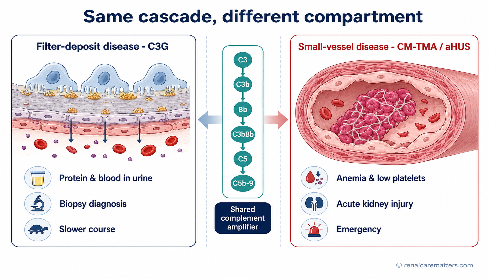
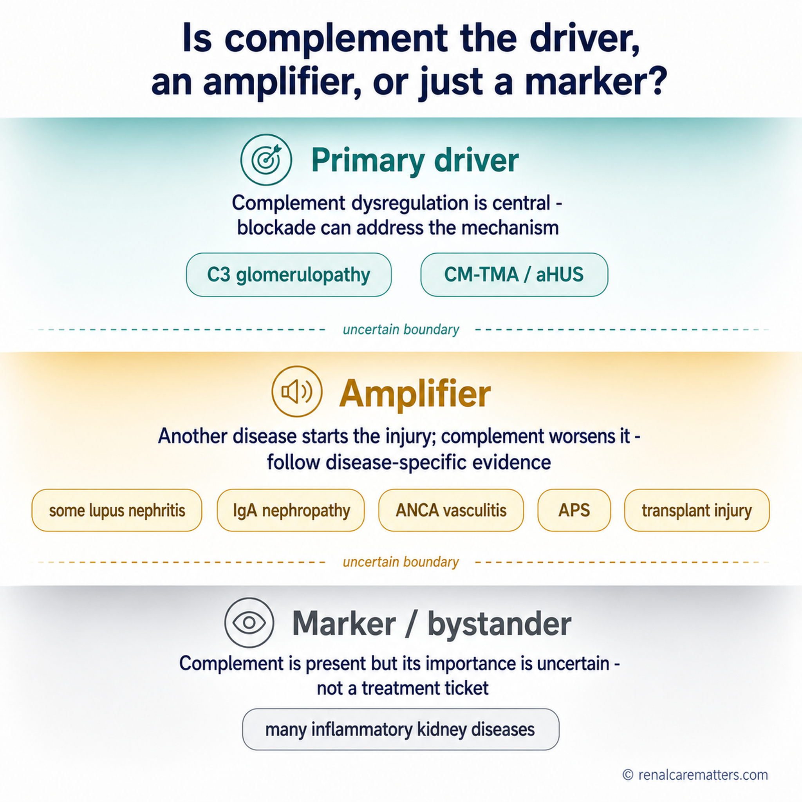
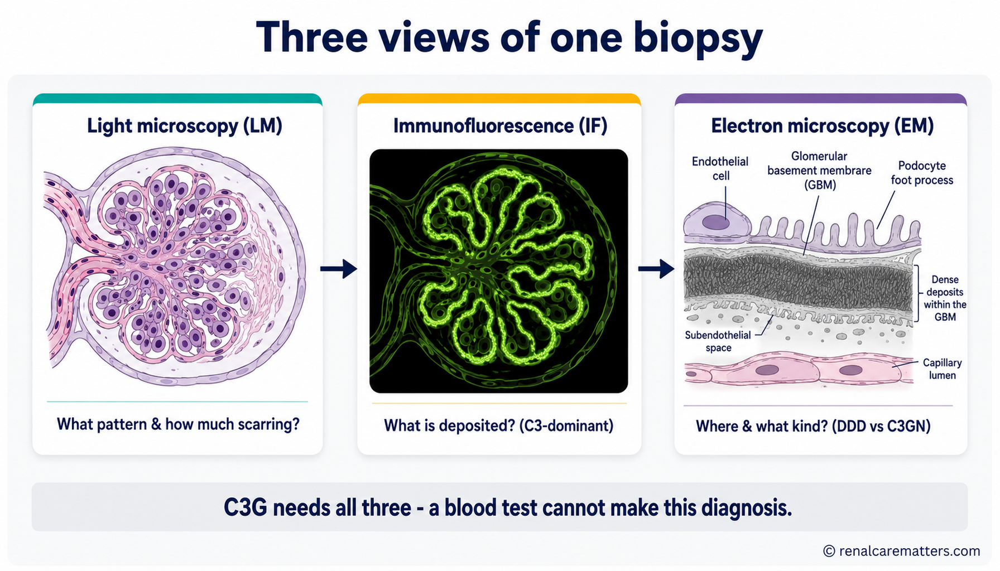
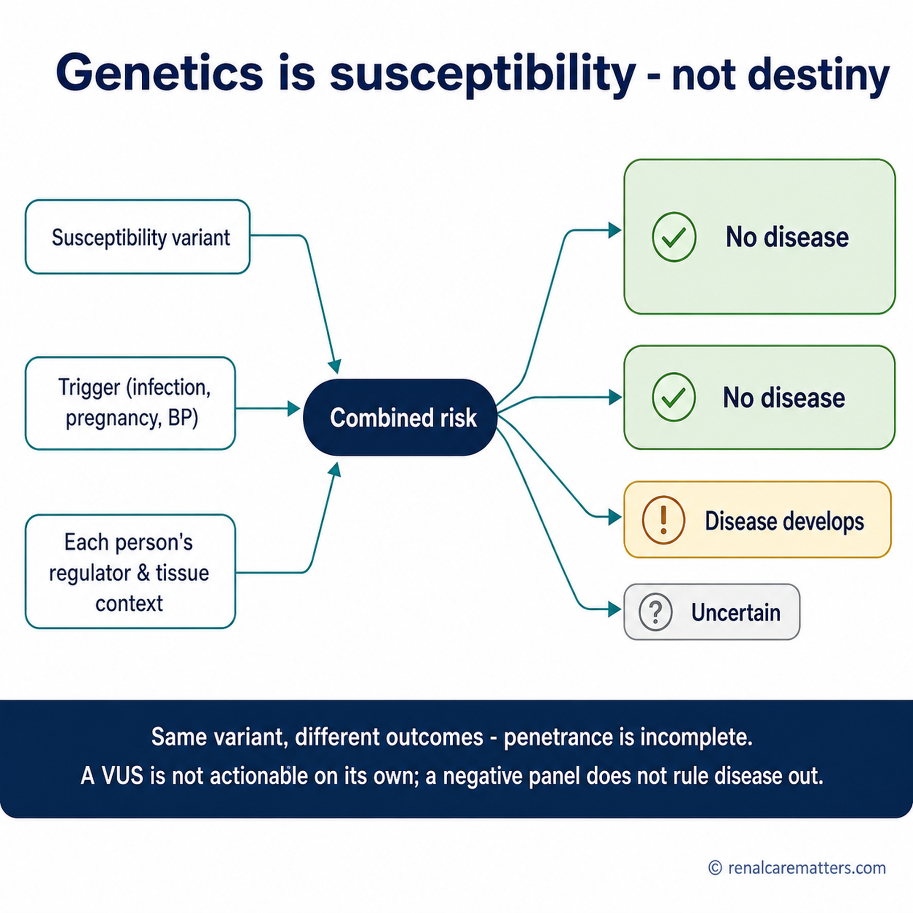
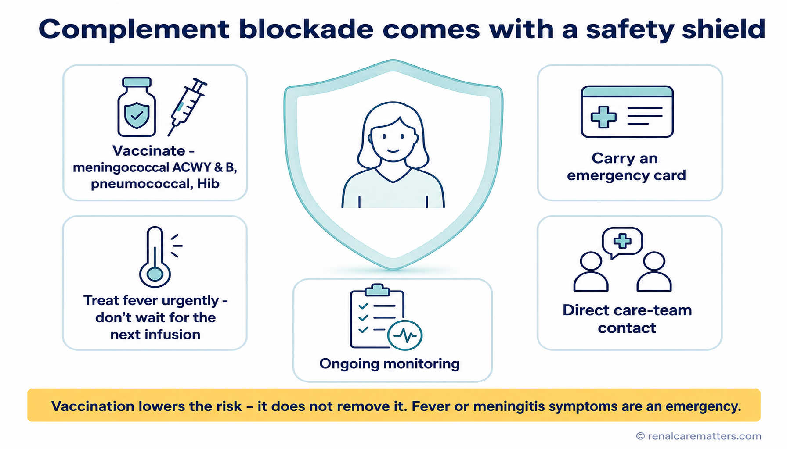
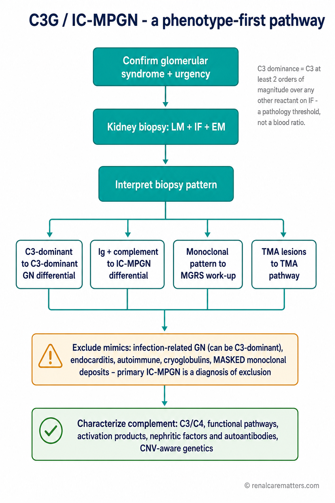
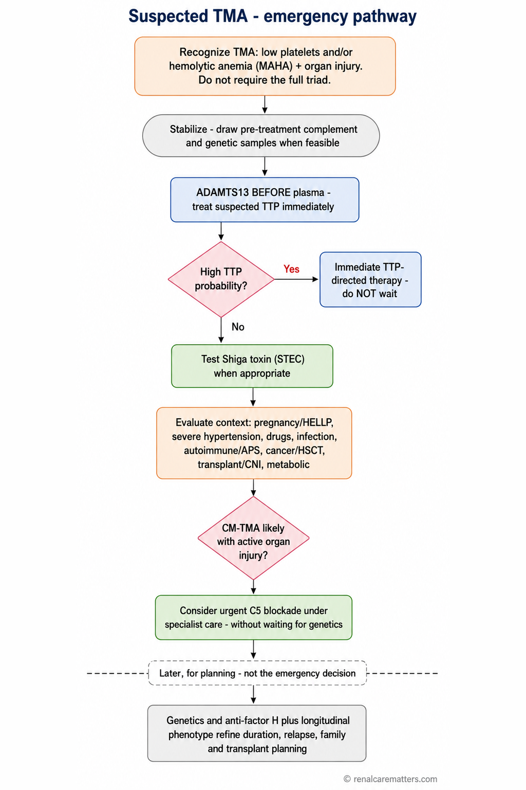
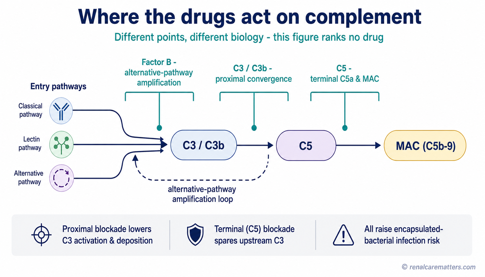

Emergency — signs of a thrombotic microangiopathy (TMA)
Go to an emergency department now if you or someone you care for has new unexplained bruising or pinpoint red spots, paleness or yellowing (jaundice), passing much less urine, a severe headache, confusion, or a seizure — or any illness like this during pregnancy or soon after delivery, or with rapidly rising blood pressure. A thrombotic microangiopathy (TMA) can destroy red blood cells, drop the platelet count, and injure the kidney within hours. One dangerous form, thrombotic thrombocytopenic purpura (TTP), is treated immediately — the emergency team does not wait for complement or genetic tests to start treatment.
If you take a complement blocker — fever is an emergency
Complement blockers (eculizumab, ravulizumab, iptacopan, pegcetacoplan) make certain bacterial infections — especially meningitis and bloodstream infection (sepsis) — able to turn life-threatening very quickly, even after vaccination. If you have fever, severe headache, a stiff neck, dislike of light, confusion, a fast-spreading rash, or feel suddenly very ill, seek urgent care and say you are on a complement blocker. Do not wait for your next infusion or clinic visit.
One immune system — several different diseases.

One shared complement cascade branches two ways: on the left it deposits complement fragments in the kidney's filter wall (C3 glomerulopathy); on the right it injures the lining of small blood vessels, which then clot (complement-mediated TMA). Same cascade — different compartment, different disease. Educational illustration.
- C3
- Complement component 3 — the hub protein of the cascade
- TMA
- Thrombotic microangiopathy — injury and clotting in small blood vessels
"Complement-mediated kidney disease" is an umbrella term for a group of disorders — it is not a single diagnosis. Complement is part of your immune system. It normally helps fight infection and clear debris. It runs on a fast chemical chain reaction with built-in brakes. When those brakes fail or the chain over-runs, complement can damage the kidney — but it damages different parts of the kidney in different ways, and that is what separates one disease from another.
Two archetypes anchor this guide. In C3 glomerulopathy (C3G), complement fragments build up in the kidney's tiny filters (the glomeruli), and the usual signs are blood and protein in the urine with a slowly changing kidney function. In complement-mediated thrombotic microangiopathy (CM-TMA) — historically called atypical hemolytic uremic syndrome (aHUS) — complement injures the lining of small blood vessels; red cells are shredded, platelets are consumed, and the kidney can fail quickly. A third pattern, primary immune-complex membranoproliferative glomerulonephritis (primary IC-MPGN), sits nearby and needs its own careful work-up. Depositing complement in a filter is genuinely not the same disease as injuring a blood-vessel lining, even though the same cascade is involved.
The one idea to carry away: a low C3 blood test is a clue, not a diagnosis; a biopsy pattern is a starting point, not a cause; and a gene variant shows susceptibility, not destiny. Doctors name the phenotype (which compartment, which pattern) first, then look for the driver, then choose a target — and they build infection protection before any complement blocker is started.
Where complement does its damage defines the disease.
The single most useful thing a patient or family can understand is which compartment is injured, because the urgency and the work-up are completely different.
C3 glomerulopathy (C3GN & dense deposit disease)
Complement fragments settle inside the filter wall. The filters leak, so you see protein and blood in the urine, sometimes swelling and high blood pressure, and kidney function that usually changes over months to years.
Diagnosed on a kidney biopsy — not on a blood test alone.
CM-TMA / aHUS
Complement injures the lining of small vessels. Red cells break apart (anemia, sometimes jaundice), platelets fall (bruising), and the kidney can be injured within hours to days — a medical emergency.
Recognized clinically and urgently; treatment is not delayed to wait for genetics.
Overlap & secondary causes
Sometimes both compartments are involved, or another disease (infection, lupus, an abnormal protein, pregnancy, severe hypertension) is the real driver and complement is only amplifying the injury.
This is why the work-up matters more than any single result.
A security system with an amplifier and brakes.
Think of complement as a building's security system. Sensors recognize microbes or damaged surfaces. An amplifier rapidly coats the target and calls in inflammation. A terminal response can punch holes in vulnerable membranes. And crucially, there are brakes and identity checks that protect your own healthy cells. Complement is not simply "bad inflammation" — it defends against infection, clears immune debris, and helps tissues repair. That is exactly why blocking it has a cost: it also changes how well you fight infection.
Recognize
Three entry pathways — classical, lectin, and alternative — detect antibodies, sugar patterns, or foreign/damaged surfaces.
Amplify at C3
All three pathways converge on cutting C3. The "alternative pathway" then amplifies the signal in a fast loop. ("Alternative" is just its scientific name — it has nothing to do with alternative medicine.)
Tag & inflame
Fragments coat targets and release signals (C3a, C5a) that recruit inflammation.
Terminal response
The membrane attack complex (MAC, also written C5b-9) can injure or activate cell membranes.
The brakes are regulator proteins — factor H, factor I, membrane cofactor protein (CD46), and others — that keep the amplifier from turning on your own tissues. In complement-mediated kidney disease, the problem is usually a failure of these brakes (from a gene change, an autoantibody, or an abnormal protein), not a lack of complement. The kidney is especially exposed because enormous volumes of blood are filtered across delicate vessel linings under high pressure, with relatively thin surface protection.
Is complement the driver, an amplifier, or just a marker?

A spectrum, not three boxes: in some kidney diseases complement dysregulation is the primary driver (C3G, CM-TMA); in others another disease starts the injury and complement amplifies it; in many, complement is simply present as a marker. Where a disease sits determines whether blocking complement is likely to help.
Complement is activated in many inflammatory kidney diseases. Finding complement — a low C3 in the blood, C3 staining on a biopsy, or a raised soluble C5b-9 — does not by itself prove that complement is the actionable cause or that a complement blocker will help. Clinicians use a three-level model:
Myth vs. mechanism: "MPGN" is a pattern, not a disease
Membranoproliferative glomerulonephritis (MPGN) is a picture a pathologist sees under the microscope — a pattern of injury. It is not a cause. The modern question is what is deposited and why: immune complexes, complement alone, an abnormal (monoclonal) protein, chronic infection, or complement dysregulation. So MPGN is a pattern, not a diagnosis — and it is a mistake to treat "MPGN" as if it automatically means C3G.
Reading the clues without over-reading them.
Each test answers one narrow question. None of them, alone, makes the diagnosis. This table shows what a result can suggest, what it cannot prove, and what usually comes next.
| Result | What it can suggest | What it cannot prove | Reasonable next step |
|---|---|---|---|
| Low C3 | Complement is being consumed or activated somewhere | That you have C3G or CM-TMA — a low C3 is a clue, not a diagnosis | Look at the whole clinical picture, C4 (a related complement protein), and a biopsy or other work-up |
| Normal C3 | No major measurable drop in blood complement | That complement disease is absent — a normal C3 does not rule it out | Keep evaluating based on the phenotype, not the number |
| C3-dominant biopsy | A C3-dominant category of glomerular disease | Primary C3G by itself — infection-related glomerulonephritis (GN) and hidden (masked) abnormal-protein deposits can also look C3-dominant | Exclude infection and monoclonal causes; add electron microscopy and complement work-up |
| MPGN pattern | A chronic pattern of filter injury | The cause of that injury | Immunofluorescence, electron microscopy, and a search for the underlying driver |
| Raised soluble C5b-9 | Terminal complement activation in that sample | A specific disease or that a drug is working | Interpret only with timing, handling, treatment, and phenotype |
| Pathogenic gene variant | Inherited susceptibility; helps explain mechanism | Certain penetrance or exactly how the disease will behave | Genetic counseling; integrate with family and transplant planning |
| Variant of uncertain significance (VUS) | Current uncertainty — we do not yet know if it matters | A diagnosis, and it is not actionable on its own | Expert review and possible re-analysis over time |
Why the kidney biopsy needs three microscopes.

A kidney biopsy is read three ways. Light microscopy (LM) shows the pattern and scarring; immunofluorescence (IF) shows what is deposited (C3, antibodies, light chains); electron microscopy (EM) shows where the deposits sit and whether they are the dense, ribbon-like deposits of dense deposit disease. Each modality answers a different question. Educational illustration — not a real photomicrograph.
- LM
- Light microscopy — shows the injury pattern and chronicity
- IF
- Immunofluorescence — shows which immune proteins are deposited
- EM
- Electron microscopy — shows the location and character of deposits
To diagnose C3 glomerulopathy, a biopsy must be read by all three methods. Light microscopy (LM) shows the pattern of injury and how much scarring there is. Immunofluorescence (IF) shows what is deposited — and C3G is defined by C3 staining that clearly dominates over antibodies. Electron microscopy (EM) is what separates the two forms of C3G — dense deposit disease (DDD), with its highly dense, ribbon-like deposits inside the filter membrane, from C3 glomerulonephritis (C3GN). A blood test cannot do any of this: C3G is a biopsy diagnosis, and telling DDD from C3GN specifically requires electron microscopy.
Genes describe susceptibility — not destiny.

Genetics shifts the odds; it does not fix the outcome. A susceptibility variant, plus a trigger, plus each person's regulatory and tissue context, can lead to different outcomes — some people develop disease and some never do. This is incomplete penetrance. Educational illustration.
- VUS
- Variant of uncertain significance — a gene change whose meaning is not yet known
Genetic testing and complement autoantibody testing can genuinely help — clarifying mechanism, estimating the chance a disease will come back after a transplant, and guiding family counseling. But genetics informs risk; it does not deliver certainty. Penetrance is incomplete (a variant does not always cause disease), the same variant can behave differently in different people, and common "risk" gene versions are not deterministic. Three honest limits matter most:
- A variant of uncertain significance (VUS) is not actionable on its own — it must not be used to diagnose disease, to start or stop a complement blocker, or to deny anyone a transplant.
- A negative gene panel does not rule the disease out — many people with genuine complement disease have no detectable variant.
- Results need expert interpretation with the clinical picture, and a classification can change if the variant is re-analyzed years later.
Relatives should be tested only through genetic counseling and only when there is a defined family question — not through a website or a curiosity check.
Real progress — and what it does not yet prove.
Between them, the diseases in this guide finally have targeted, trial-tested treatments. That is a genuine advance. But it is just as important to understand the limits of what the trials showed, because that is where patients are most often misled.
Supportive kidney care remains the foundation, with or without targeted therapy: controlling blood pressure and protein loss (usually with an ACE inhibitor or ARB), managing fluid and cholesterol, treating infections, avoiding kidney-toxic drugs, and planning ahead for kidney failure. Supportive care is never "doing nothing" — it protects the kidney while other decisions are made.
Iptacopan (APPEAR-C3G) — for C3 glomerulopathy
Iptacopan is an oral drug that blocks factor B, dampening the alternative-pathway amplifier. In a randomized, placebo-controlled phase 3 trial of 74 adults with biopsy-confirmed C3G, iptacopan reduced urine protein (UPCR) by about 35% versus placebo at 6 months, an effect maintained to 12 months. The U.S. Food and Drug Administration (FDA) approved it on 20 March 2025, for adults with C3G, to reduce proteinuria.
What it does not yet prove: the main result is a proteinuria (surrogate) endpoint over a short randomized period. A drop in urine protein is meaningful, but it has not yet been shown to prevent long-term kidney failure. There is no proof for children or, from this trial, for transplant recipients.
Pegcetacoplan (VALIANT) — for C3G and primary IC-MPGN
Pegcetacoplan is an injected drug that blocks C3/C3b more proximally. In a randomized, placebo-controlled phase 3 trial of 124 people aged 12 and older with C3G or primary IC-MPGN, it reduced urine protein by about 68% versus placebo at 26 weeks and stabilized kidney function. The U.S. FDA approved it on 28 July 2025, for patients aged 12 and older with C3G or primary IC-MPGN, to reduce proteinuria.
What it does not yet prove: again a 26-week proteinuria-centered result. Only a small number of transplant-recurrence patients were included, so that subgroup is uncertain. Long-term kidney survival, the best duration, and how it compares head-to-head with other options are all still unknown.
Eculizumab & ravulizumab — C5 blockers for CM-TMA / aHUS
For complement-mediated TMA, blocking C5 (the terminal step) has been transformative. Eculizumab and ravulizumab improve blood counts and kidney recovery, and starting treatment early is associated with better kidney recovery. These drugs are established, approved therapies for aHUS in many countries.
An honest caveat: because aHUS is rare and severe, the evidence comes from prospective single-arm trials and registries, not randomized placebo-controlled trials. The benefit is well supported by the biology and by recovery after early treatment, but questions about which drug, how long, and which subgroups remain less certain. For C3G specifically, C5 blockade is not an approved or proven standard therapy.
Guidelines have a date on them
The most recent published Kidney Disease: Improving Global Outcomes (KDIGO) glomerular-disease guideline (2021) suggested mycophenolate plus steroids for moderate-to-severe C3G, and it predates the 2025 iptacopan and pegcetacoplan trials and approvals. Its advice was based mostly on observational data. A separate KDIGO conference on complement diseases was held in 2026, but a conference is not a guideline — its formal recommendations do not exist until the peer-reviewed report is published. Any treatment plan needs current specialist interpretation.
A complement blocker changes how you fight infection.

Complement blockade is paired with a safety system, not started alone: vaccination, an emergency card to show any clinician, a plan to treat fever urgently, direct care-team contact, and ongoing monitoring. The shield reduces risk — it does not remove it. Educational illustration.
Because complement helps kill certain bacteria — especially the "encapsulated" ones like meningococcus, pneumococcus, and Haemophilus influenzae — blocking it raises the risk of severe, fast-moving infections. This is not an administrative checkbox; it is part of the treatment itself. Before and during complement blockade, the plan should include:
- Vaccination against meningococcus (ACWY and B), pneumococcus, and Haemophilus, timed to the drug's label and national guidance;
- Preventive antibiotics when the label or local protocol requires them — especially if treatment must start before vaccines can take full effect;
- An emergency card you carry, and a clear plan to seek urgent care for fever;
- A named contact on your care team and a working link to emergency services and to your primary doctor.
Vaccination lowers the risk — it does not remove it
Even fully vaccinated, a person on a complement blocker can still develop life-threatening meningococcal infection. That is why the fever rule at the top of this page is absolute. And never stop a complement blocker on your own based on a website or a single result — stopping can let the disease relapse and cause permanent kidney injury. Any change is a shared decision with your specialist.
Planning a transplant is mechanism-based.
These diseases can return in a transplanted kidney, and the risk depends on which disease and why it happened. C3G frequently recurs after transplant, so recurrence is watched for with urine tests, kidney function, and sometimes biopsy. For CM-TMA/aHUS, the chance of recurrence depends heavily on the specific genetic or autoantibody findings and the previous course; some high-risk recipients are protected with complement blockade, but there is no one-size-fits-all rule — this must be decided by a transplant team with complement expertise. If an abnormal protein or another secondary driver caused the disease, that has to be treated before transplant. Living-donor and family decisions require genetic counseling, privacy, and a clear separation between the recipient's urgency and the donor's free choice.
What is approved in the U.S. is not automatically available here.
A U.S. FDA approval is not the same as Philippine registration, local availability, or insurance coverage. Some tests (electron microscopy, specialized complement and genetic assays) and some treatments (complement inhibitors, certain vaccines) may be limited or costly here. None of that lowers the urgency of an emergency, and it does not mean incomplete testing is acceptable when action is time-sensitive. The practical approach is a staged one: do the time-critical, locally available tests first (blood counts, smear, kidney function, urine, C3/C4, pregnancy testing, and — when TTP is suspected — an ADAMTS13 sample before plasma if feasible); send specialized complement, genetic, and pathology studies to reference laboratories; and preserve pre-treatment samples where possible without delaying life-saving treatment. Current Philippine registration and availability of these drugs must be verified case by case; check the Philippine FDA Verification Portal and ask your specialist and hospital pharmacy. A referral to a nephrologist can start with the Philippine Society of Nephrology.
Questions and records that speed up the right diagnosis.
Complement-mediated kidney diseases are managed by teams — nephrology, pathology, hematology, genetics, infectious diseases, and often a transplant service. You can help by bringing an organized record and a short list of questions:
- Records: your kidney biopsy report (ask whether it included immunofluorescence and electron microscopy), all C3/C4 and complement results with dates, any genetic or autoantibody reports, your medication list, and your vaccination record.
- Questions: Which compartment does my disease affect — the filters, the small vessels, or both? What is the driver, and is it complement, an antibody, an abnormal protein, an infection, or unknown? If a complement blocker is considered, what is the exact infection-prevention plan, and is the drug actually available and approved in the Philippines? What are we monitoring, and what would change the plan?
Use the browser's print button (or the print icon on this page) to save this guide, and hand a copy to your care team.
Frequently asked questions.
A phenotype-first framework.
Complement-mediated kidney disease is not one diagnosis. The unifying discipline is to name the phenotype first, identify the driver second, select a target third, and build infection prevention before complement blockade. C3 deposition in glomerular filters is a different disease from endothelial injury and microvascular thrombosis, even though both engage the same cascade. Three propositions carry the framework:
Non-negotiable guardrails
Low C3 never equals C3G or CM-TMA, and a normal C3/C4 does not rule either out. An MPGN pattern is not an etiologic diagnosis. C3G requires kidney-biopsy immunofluorescence; DDD-versus-C3GN classification requires electron microscopy. Suspected TTP is an emergency — ADAMTS13 sampling and TTP-directed management are not delayed by a complement work-up, and time-sensitive CM-TMA treatment is not delayed to wait for genetics. A negative genetic panel does not rule out disease; a VUS does not diagnose, direct therapy, or deny transplantation. KDIGO Practice Points are not graded recommendations. A U.S. FDA approval is not Philippine registration, availability, reimbursement, or an individual recommendation.
C3G and primary IC-MPGN: biopsy-defined, driver-directed.

A phenotype-first glomerular pathway: confirm the glomerular syndrome, biopsy with LM/IF/EM, classify deposits (C3-dominant vs immune-complex vs monoclonal vs TMA), exclude secondary drivers, then characterize complement. Educational algorithm illustration.
DDD vs C3GN is an EM distinction (dense, ribbon-like intramembranous deposits vs more variable mesangial/subendothelial/subepithelial deposits); the two are morphologic categories, not fully distinct clinical courses or treatment algorithms. C3-dominant staining does not exclude infection-related GN or masked monoclonal disease, and biopsy phenotype can evolve over time. In adults — especially older adults or those with atypical pathology — pursue a monoclonal gammopathy work-up (serum/urine immunofixation, serum free light chains interpreted for GFR, hematology review); a small clone can drive disease and should not be called incidental without multidisciplinary review.
The TMA differential: act first, sequence tests correctly.

Emergency thrombotic microangiopathy algorithm. Recognition and TTP-directed action come before complement genetics; emergency treatment is never delayed for genetic results. Abbreviations: MAHA (microangiopathic hemolytic anemia); STEC (Shiga toxin–producing E. coli). Educational algorithm illustration.
- MAHA
- Microangiopathic hemolytic anemia
- STEC
- Shiga toxin–producing E. coli
Trigger-associated / secondary TMA — five questions per context
For pregnancy/postpartum, severe hypertension, autoimmune disease/APS, transplant, cancer/VEGF inhibition, calcineurin/mTOR inhibitors, infection, systemic sclerosis, and HSCT, ask: (1) Is the trigger sufficient to explain the TMA? (2) Is the TMA improving after treating/removing it? (3) Is complement dysregulation plausible or demonstrated? (4) Is organ injury ongoing? (5) What evidence supports C5 blockade in this specific context? Regional expert-consensus algorithms (e.g., 2025 Asia-Pacific) may inform these cards but are not randomized evidence.
Test layers, each with a limitation.
| Layer | Examples | Question answered | Main limitation |
|---|---|---|---|
| Routine abundance | C3, C4 | Systemic consumption/imbalance? | Normal does not exclude local/surface disease; low is nonspecific |
| Functional pathways | CH50, AP50/AH50 | Can pathways function in the sample? | Treatment, deficiency, handling, and consumption confound |
| Activation products | Bb, C3 fragments, soluble C5b-9 | Detectable plasma activation? | Preanalytics/assay variability; may not reflect endothelial-surface activation |
| Protein level/function | Factor H, I, B and regulators | Deficient/abnormal regulator? | Normal quantity does not prove normal function |
| Autoantibodies | C3/C5 nephritic factors, anti-FH, anti-FB | Acquired dysregulation? | Poorly standardized; titers may not track activity |
| Genetics | Complement/TMA panels with CNV/structural analysis | Inherited susceptibility/mechanism? | Incomplete yield, incomplete penetrance, VUS, evolving classification |
| Tissue | IF/EM and complement stains | Where is deposition/injury? | A snapshot; staining alone does not establish systemic mechanism |
Timing & handling
Collect EDTA/plasma/serum and DNA before plasma infusion/exchange and before complement blockade when feasible; record infection, pregnancy, dialysis, transfusion, plasma therapy, immunosuppression, and inhibitor timing; and follow the receiving reference laboratory's tube, processing, freezing, and transport instructions exactly. A mishandled activation biomarker can be worse than no result — but life-saving treatment takes priority over perfect sampling. Report each genetic result with panel scope, transcript/build, ACMG (American College of Medical Genetics) and AMP (Association for Molecular Pathology) classification and date, phenotype fit, inheritance/phase if known, functional evidence, re-analysis date, and a genetic-counseling plan. Avoid "good gene/bad gene" red/green graphics.
Reconciling KDIGO 2021 with the 2025 targeted-therapy era.
KDIGO Practice Point The KDIGO 2021 glomerular guideline (Chapter 8) advised excluding infection-related/post-infectious GN before assigning C3G (PP 8.1.4) and, for moderate-to-severe C3G without monoclonal gammopathy, suggested mycophenolate mofetil (MMF) plus glucocorticoids initially, with eculizumab considered on failure (PP 8.2.2.1) — typically for proteinuria >1 g/day with hematuria or declining function over ≥6 months. These are Practice Points, not graded recommendations, based mainly on observational evidence, and they predate the 2025 phase 3 trials and U.S. approvals of proximal complement inhibitors. The April 2026 KDIGO Complement-Mediated Kidney Diseases Controversies Conference is not a clinical-practice guideline; its conclusions are not formal recommendations until the peer-reviewed report is published.

Where the drugs act: factor B (which suppresses the alternative pathway, AP, amplification loop), C3/C3b (proximal convergence), and C5 (terminal C5a and MAC). Proximal versus terminal blockade differ biologically — but mechanism does not substitute for disease-specific evidence, and this figure ranks no drug. Educational illustration.
- MAC
- Membrane attack complex (C5b-9)
- AP
- Alternative pathway
Iptacopan — APPEAR-C3G
Oral factor B inhibitor (alternative pathway). Randomized, double-blind, placebo-controlled; 74 adults aged 18–60 with biopsy-confirmed native-kidney C3G, reduced serum C3, UPCR ≥1 g/g, eGFR ≥30 mL/min/1.73 m²; 6-month randomized period then 6-month open-label. Result: ~35% relative reduction in 24-h UPCR vs placebo at 6 months (35.1%; 95% CI 13.8–51.1; p=0.0014), maintained to 12 months. U.S. FDA approval 20 March 2025 for adults with C3G to reduce proteinuria; label carries serious encapsulated-bacterial infection warning, vaccination requirements, a Risk Evaluation and Mitigation Strategy (REMS), and lipid monitoring.
Limitations: modest sample in an ultra-rare disease; proteinuria primary endpoint; limited randomized duration; no head-to-head; no proof of long-term kidney-failure prevention; the pivotal population does not establish efficacy in normal-serum-C3, pediatric, or post-transplant C3G. See infection safety.
Pegcetacoplan — VALIANT
Subcutaneous C3/C3b inhibitor. Randomized, double-blind, placebo-controlled; 124 participants aged ≥12 with C3G or primary IC-MPGN (native kidneys plus a small post-transplant recurrent subgroup); 26-week randomized period. Result: relative UPCR reduction vs placebo 68.1% (95% CI 57.3–76.2; p<0.0001); composite renal endpoint 49% vs 3%; ≥50% UPCR reduction 60% vs 5%; eGFR difference +6.3 mL/min/1.73 m² vs placebo. The histologic activity-score change did not differ significantly among 69 evaluable biopsies, and subsequent hierarchical endpoints were not formally tested after that point. U.S. FDA approval 28 July 2025 for patients aged ≥12 with C3G or primary IC-MPGN to reduce proteinuria; boxed encapsulated-bacterial infection warning and REMS.
Limitations: proteinuria-centered primary endpoint; 26-week randomized period; only nine transplant-recurrence participants (subgroup estimates imprecise); long-term kidney survival, duration, and comparative effectiveness unknown; industry funded. See infection safety.
C5 blockade for CM-TMA/aHUS — eculizumab & ravulizumab
Eculizumab (anti-C5) improved hematologic endpoints and eGFR in two prospective phase 2 cohorts (37 participants total in the 2013 pivotal report), with greater kidney recovery when treatment began early; four of five dialysis-dependent participants in the progressive-TMA cohort discontinued dialysis. Ravulizumab (long-acting anti-C5) achieved complete TMA response in 30 of 56 evaluable complement-inhibitor-naive adults (53.6%) by day 183, with less frequent maintenance dosing. Both hold established aHUS indications in multiple jurisdictions.
Evidence character: the absence of randomized placebo trials reflects rarity, severity, and ethical/practical constraints; benefit is supported by prospective single-arm data, historical comparisons, registries, mechanistic coherence, and recovery after early blockade — but certainty for comparative choice, duration, and secondary-TMA subgroups is lower. For C3G, eculizumab is not approved (off-label in the U.S.) and its C3G evidence is limited to small open-label studies/case series; C5 blockade leaves upstream C3 convertase activity/deposition intact.
| Strategy | Target | Evidence | Applicable population | Unresolved |
|---|---|---|---|---|
| Supportive care | Hemodynamic / chronic kidney disease (CKD) risk | General CKD evidence | All, individualized | Disease-specific sodium–glucose cotransporter-2 inhibitor (SGLT2) outcomes (extrapolated) |
| MMF + glucocorticoid | Immune/inflammatory activity | Observational; KDIGO Practice Point | Selected moderate–severe C3G without monoclonal driver | Response biomarker, sequencing, toxicity |
| Clone-directed therapy | Pathogenic B/plasma-cell clone | MGRS principles/observational | Monoclonal gammopathy-associated disease | Best regimen; combining with complement therapy |
| Iptacopan | Factor B / AP | Phase 3 randomized controlled trial (RCT) | U.S. label: adult C3G | Long-term outcome, children, transplant, sequence |
| Pegcetacoplan | C3/C3b | Phase 3 RCT | U.S. label: ≥12 C3G or primary IC-MPGN | Long-term outcome, duration, comparative effectiveness |
| Eculizumab (C3G) | C5 | Small studies/cases | Selected off-label C3G contexts | Validated responder phenotype |
| C5 blockade (CM-TMA) | C5 | Prospective single-arm/registry | CM-TMA/aHUS | Comparative choice, duration, secondary subgroups |
Do not claim head-to-head superiority among these strategies (no such trials exist), equate a proteinuria reduction with long-term kidney survival, or choose/sequence a drug from a pathway diagram alone. Plasma exchange/infusion is not equivalent to C5 blockade for confirmed CM-TMA; its roles are immediate TTP treatment while testing is pending, a bridge when an inhibitor is unavailable, anti-factor H antibody disease with immunosuppression under specialist protocols, and selected diagnostic contexts — and it alters complement testing.
Duration & discontinuation
There is no universal lifelong-versus-fixed-duration rule. Decisions integrate the pathogenic variant/anti-FH/structural finding, prior relapses and severity, residual CKD, transplant status, a persistent trigger, tolerance and infection risk, access to immediate testing and rapid retreatment, and patient preference. Prospective discontinuation data show relapse in roughly a quarter of selected patients, with higher risk among carriers of rare complement-gene variants; systematic review confirms heterogeneity and higher risk in selected genotypes/allografts. No tool or website should ever output "safe to stop." A structured discontinuation plan documents the shared rationale, baseline labs, monitoring frequency/duration, symptom/urine/BP plan, rapid-access contact, relapse thresholds, drug/vaccine readiness, and family/pregnancy/transplant considerations.
Recurrence risk is mechanism-specific.
Pre-transplant, secure the native diagnosis and its driver (genetic, autoantibody, monoclonal, infection-related, or unknown), assess disease activity, and define a monitoring plan. C3G/IC-MPGN often recurs after transplant (reported rates vary with surveillance intensity and definitions); monoclonal or secondary drivers must be treated before/around transplantation, and recurrence may present as proteinuria, hematuria, falling graft function, or on protocol/indication biopsy. VALIANT included only a small recurrent post-transplant subgroup, so those results are encouraging but imprecise. For CM-TMA, genotype/phenotype and prior course drive risk; prophylactic C5 blockade can protect selected high-risk recipients, but there is no website-safe universal rule, and isolated membrane-bound regulator defects may differ from circulating-factor defects. Do not screen a relative without counseling and a defined question; a negative limited panel does not remove all risk; and separate recipient urgency from donor voluntariness.
Structured work-up templates.
Copy into the chart. These organize the work-up and preserve the reasoning; they do not encode treatment decisions.
Evidence labels used in this guide
Phase 3 randomized trial (APPEAR-C3G, VALIANT — state endpoint, population, duration, limitations). Prospective single-arm trial (eculizumab/ravulizumab aHUS — no randomized control). KDIGO Practice Point (practical guidance, not a graded recommendation). KDIGO conference report (multidisciplinary conclusions, not a guideline). Regulatory indication · U.S. (exact age, disease, endpoint, date, jurisdiction). Observational evidence (MMF/steroid cohorts, discontinuation, transplant recurrence). Mechanistic evidence (pathway, biomarkers, genetics). Evidence gap (no validated biomarker, no sequencing trial, no long-term outcome proof, no local data). Philippine implementation note (local test/drug/vaccine/referral/financing — verify separately).